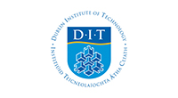

Institute Of Technology Blanchardstown
ITB Today
ITB From above

Location
ITB is a college located in Blanchardstown, it directly serves the greater Blanchardstown area and the north and west of Dublin city and county. Like other Institutes of Technology, it also draws students from neighbouring counties, such as Meath, Kildare, Cavan and Louth as well as from further afield.
TUD
On 17 July, An Taoiseach, Leo Varadkar TD, announced the decision to approve the establishment of Technological University Dublin, to be known as TU Dublin, during a visit to Grangegorman. With establishment confirmed for January 2019, the first graduates of TU Dublin will receive awards from the new University in February 2019.
TU Dublin, will focus on providing educational opportunities that are practice-based and research-informed; that will meet the diverse needs of learners, reflecting their specific requirements in terms of pace and place; and in a rapidly changing knowledge environment, prepare them to build meaningful careers throughout their lives. The University will be developed on campuses spanning the three largest centres of population in the Greater Dublin Region - Dublin City, Blanchardstown and Tallaght.